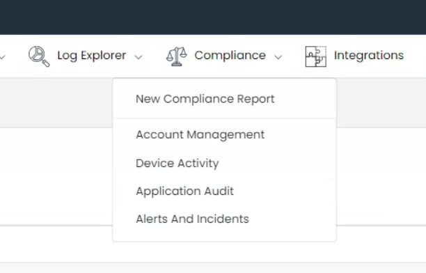

Compliance Management
Welcome to our comprehensive guide on the Compliance Management module, an indispensable feature of our software platform. This module is designed to assist organizations in achieving and maintaining compliance with diverse industry-specific regulations. By supporting a wide array of standards, the Compliance Management module offers a comprehensive view of your organization’s regulatory compliance landscape.

Upon navigating to the Plataform Menu, you’ll be greeted by the Compliance menu, presenting you with an option to create a new compliance report or browse through various compliance standards dashboards.

Supported Compliance Standards
Our module supports several critical compliance standards, ensuring that your organization stays compliant in various sectors:
1. Health Insurance Portability and Accountability Act (HIPAA)
HIPAA is a U.S. federal law that sets national standards to protect sensitive patient health information from unauthorized disclosure. The HIPAA section within the Compliance Management module incorporates reports specifically designed to monitor compliance with critical HIPAA provisions, such as sections §164.308(a)(1)(ii)(A)(D), §164.312(b), and others. Each report aims to facilitate the implementation of policies and procedures to detect and manage security violations effectively.
2. General Data Protection Regulation (GDPR)
GDPR is a comprehensive data protection law in the European Union (EU), which regulates the processing of personal data. The software offers pre-configured reports to ensure that your data processing operations adhere to GDPR’s core principles.
3. Gramm-Leach-Bliley Act (GLBA)
GLBA, also known as the Financial Modernization Act of 1999, controls how financial institutions handle the private information of individuals. The GLBA section in the module contains reports tailored to key GLBA provisions, assisting you in maintaining GLBA compliance.
4. System and Organization Controls 2 (SOC 2)
SOC 2 report focuses on a business’s non-financial reporting controls relating to security, availability, processing integrity, confidentiality, and privacy of a system. The software provides essential reports aligned with the Control Criteria (CC) of SOC 2 to facilitate the achievement and maintenance of SOC 2 compliance.
5. Federal Information Security Management Act (FISMA)
FISMA is a U.S. federal law that mandates federal agencies to develop, document, and implement an information security and protection program. The module provides pre-defined reports monitoring compliance with FISMA’s crucial sections.
6. Cybersecurity Maturity Model Certification (CMMC)
CMMC certification is a requirement for businesses bidding on U.S. Government contracts. The CMMC section within the module provides reports specifically designed to monitor compliance with different CMMC Levels.
7. Payment Card Industry Data Security Standard (PCI-DSS)
PCI-DSS is a set of standards for managing and securing credit card-related personal data. The PCI-DSS section in the Compliance Management module provides reports aligned with specific PCI requirements, ensuring that your credit card data processing activities remain within the bounds of PCI-DSS standards.
Report Overview and Options
Each compliance standard in this module is subdivided into distinct sections, and each section contains several pre-defined reports. These reports are meticulously designed to monitor and manage your organization’s compliance with that specific section of the standard.

Within each report, you can get an overview, change the date range, export the data in CSV format, or generate a PDF using a professional pre-defined template provided by the platform.


Furthermore, you can also swiftly generate a report using the ‘New Compliance Report’ option in the main menu.

Comprehensive Compliance Management
In addition to the rich features above, the Compliance Management Dashboard, also found in the application management section, allows full customization of all compliance standards. You have the freedom to edit, delete, or add sections and reports to cater to your unique requirements.
Add Standard
The Compliance Management module is built with the understanding that every organization’s compliance needs are unique. Thus, it features the flexibility to add new compliance standards that are pertinent to your business requirements.
To add a new standard, navigate to the Compliance Management section. Here, you’ll find the ‘Add Standard’ button. Clicking on this button triggers a user-friendly interface where you can input the necessary details of the new standard. This intuitive process allows you to tailor your compliance management system precisely according to your organization’s needs.

Adding Reports
Our module also understands the need for specific reporting within each compliance standard. Therefore, it offers you the ability to add new reports to an existing compliance standard.
To add a new report, select the desired standard and section where you want to include the report. You can then choose from an existing report dashboard and integrate it into your selected compliance section. This feature allows you to customize the depth of your compliance reporting, ensuring every critical aspect of your regulatory requirements is covered.

Import/Export
Recognizing the need for interoperability and seamless transitions across various systems, the Compliance Management module is equipped with an advanced import/export feature. This tool is designed to help you efficiently manage and transport your compliance information.
To export your current compliance data, the module offers the ability to create a comprehensive JSON file. This file encapsulates all the necessary details of your compliance standards, sections, and reports. By clicking on the ‘Export All’ button, a complete snapshot of your current compliance setup is instantly packaged into a portable file, ensuring no critical details are lost during transit. This is particularly useful for backup purposes, migrating to a new system, or simply sharing your compliance structure with other teams or departments.
The import feature plays a crucial role when you need to populate the module with existing compliance data from another system. By using the ‘Import All’ button, you can upload the JSON file containing the requisite data. The module will seamlessly integrate this data, ensuring your compliance standards, sections, and reports are set up exactly as per your previous system.